🍴 Menu Principal: Sabores de Moçambique
1. Caracata com Nikuzy
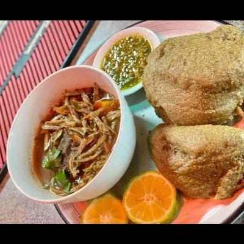Massa de farinha de mandioca (Caracata) servida com Nikuzy (folhas de abóbora ou feijão). Um clássico nutritivo.
Preço: 750,99 MT
2. Caracata com Badjia e Molho de Manga
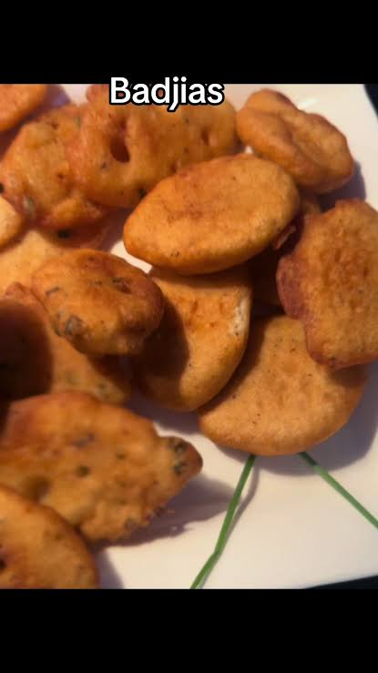Caracata acompanhada por Badjia (pastel salgado de feijão) e um agridoce Molho de Manga da época.
Preço: 850,99 MT
3. Xima com Galinha Lurdes Mutola
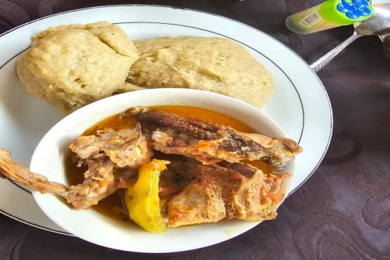Xima tradicional servida com um estufado de galinha especial, numa homenagem à atleta moçambicana.
Preço: 1050,99 MT
4. Muamba de Galinha Tradicional

Galinha cozida lentamente no óleo de palma com quiabos e vegetais, uma delícia africana.
Preço: 970,99 MT
5. Matapa com Camarão e Grelhado no piri-piri
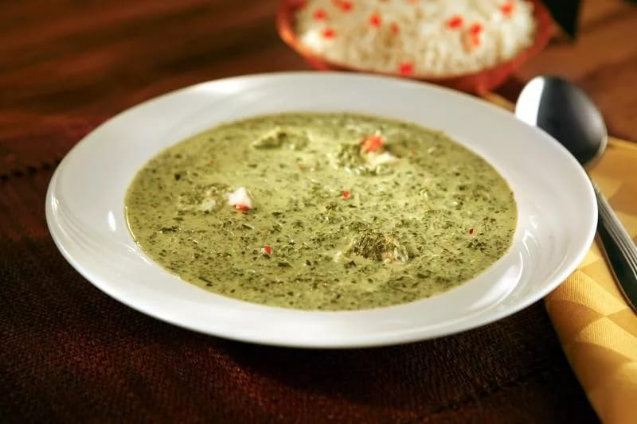Matapa cremosa (folha de mandioca, amendoim e coco) enriquecida com camarão fresco, acompanhada por um grelhado picante.
Preço: 1150,99 MT
6. Caldeirada de Marisco à Monapo
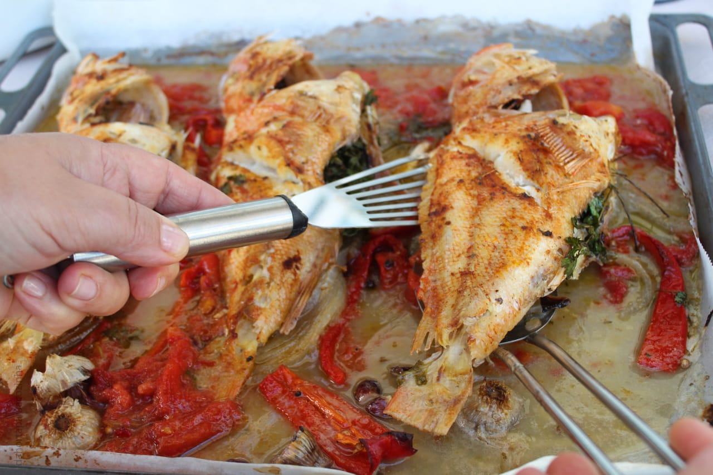Caldeirada regional, rica em peixe e marisco fresco, com o toque de temperos típicos de Monapo.
Preço: 1350,99 MT
7. Frango à Zambeziana
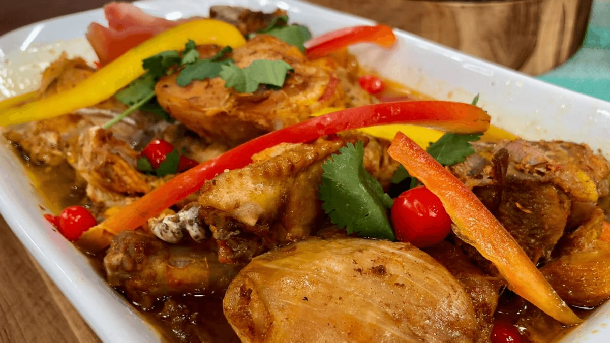Frango assado ou grelhado, marinado em limão, alho e leite de coco, com um sabor inconfundível.
Preço: 1300,99 MT
8. Iscas de Fígado e Batata
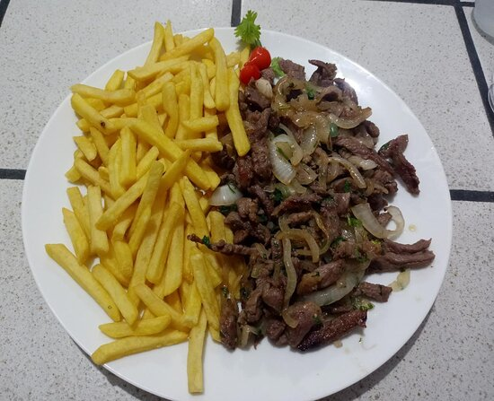Fígado tenro e cortado em iscas, preparado com cebola e especiarias, servido com batata frita caseira.
Preço: 1120,99 MT
9. Cabrito Estufado com Arroz
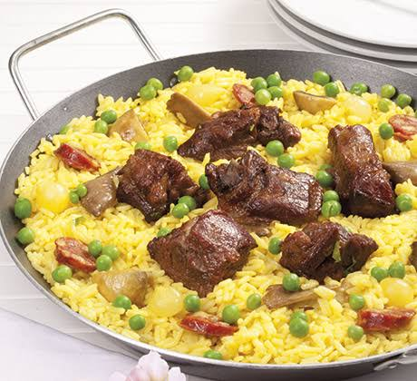Cabrito cozinhado em estufado, macio e com um molho rico, tradicionalmente acompanhado por arroz branco.
Preço: 1780,99 MT
10. Camarão Tigre Grelhado (Unidade)
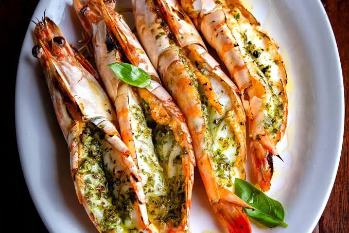O famoso Camarão Tigre de Moçambique, grelhado na brasa e pincelado com manteiga de alho e limão.
Preço: 1300,99 MT
11. Mandioca Cozida com Molho de Tomate
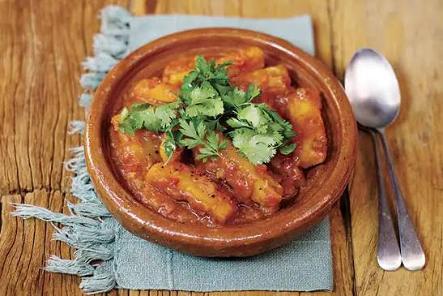Mandioca cozida até ficar macia, servida como acompanhamento com um molho de tomate fresco e caseiro.
Preço: 1250,99 MT
12. Peixe Fresco Grelhado à Moda de Monapo
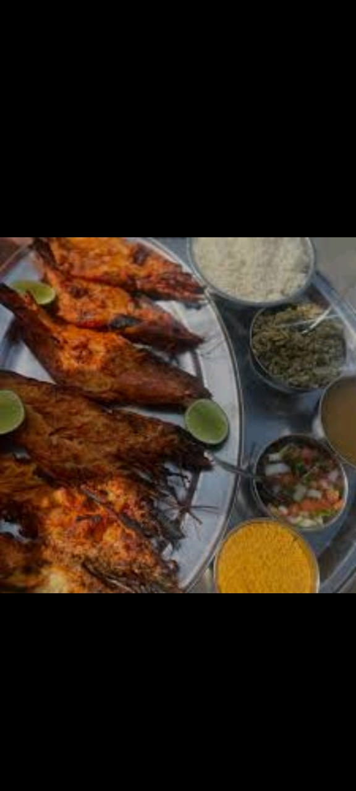Peixe do dia, grelhado na hora, temperado com sal marinho e limão. Acompanha salada e batata cozida.
Preço: 800,99 MT
13. Chamuças de Carne (4 Unidades)

As tradicionais chamuças moçambicanas, recheadas com carne e especiarias, servidas com molho de caril.
Preço: 999,99 MT